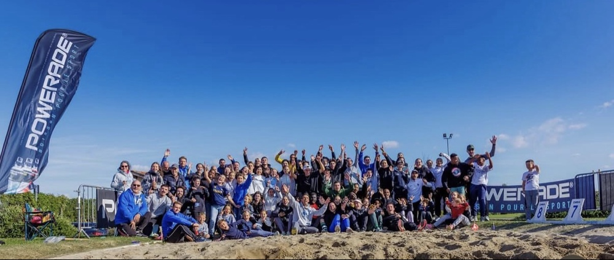

TRANSFORMEZ VOTRE PUBLIC
EN SUPPORTERS
De la Pro A au sport amateur : l'animation micro qui donne du rythme à vos événements.

L'Homme derrière le micro
Salut, c'est Maxime ! À 23 ans, je transforme ma passion pour le sport en métier. Mon objectif ? Apporter un souffle nouveau et une énergie débordante à l'animation sportive.
Micro en main et conducteur maîtrisé, je sais qu'un événement réussi ne repose pas que sur la performance des athlètes, mais sur l'émotion qu'on partage avec le public.
PLUS QU'UNE VOIX,
UNE SOLUTION
Chauffeur de Salle
Je connais les codes pour lever les foules et gérer les temps morts sans jamais perdre l'attention du public.
Digital Native
Je parle la langue de vos jeunes spectateurs. Je crée du contenu (stories, réels) pour faire vivre l'event sur les réseaux.
Gestion de Projet
Co-créateur d'événements, je comprends vos contraintes logistiques et m'adapte au conducteur en temps réel.

Le "Meeting Chaussette"
Réunir 500 personnes et des athlètes internationaux.
Co-créateur de cet événement unique, j'ai géré l'animation et l'expérience spectateur de A à Z. C'est la preuve que l'animation n'est pas qu'une question de voix, mais de fédération.
Voir toutes mes réalisationsPRÊT À FAIRE DU BRUIT ?
Discutons de votre prochain tournoi, gala ou soirée de lancement.
Me contacter